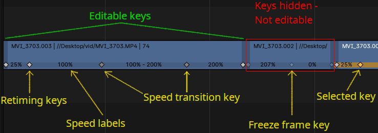

Chỉnh sửa strip¶
Controls¶
Overlap Mode¶
Overlap Mode xác định kết quả khi biến đổi một strip khiến nó chồng lên strip khác.
- Expand:
Tất cả strip nằm bên phải (mỗi) strip được biến đổi sẽ bị đẩy về phía trước để chừa chỗ cho strip chồng lên.
- Overwrite:
Strip bị chồng lên sẽ bị ghi đè, cắt gọn hoặc tách bởi strip chồng lên nó.
- Shuffle:
Strip chồng lên sẽ được chuyển đến vùng trống gần nhất để nó không còn chồng lấn.
Snapping¶
Snap có thể được bật/tắt bằng cách nhấp vào (Snap Off) / (Snap On) trong header của 3D Viewport, hoặc bật tạm thời bằng cách giữ Ctrl sau khi bắt đầu kéo một strip.
Mũi tên thả xuống cung cấp các tùy chọn sau:
- Snap to
- Frame Range
Snap vào frame bắt đầu và kết thúc của vùng xem trước hoặc khoảng scene; hoặc khi ở bên trong Meta Strip thì snap mục tiêu vào khoảng hiển thị của meta strip.
- Current Frame
Snap vùng chọn đã biến đổi vào Playhead.
- Hold Offset
Snap vùng chọn đã biến đổi vào Hold Offset.
- Markers
Snap vùng chọn đã biến đổi vào Markers.
- Retiming Keys
Snap vùng chọn đã biến đổi vào Retiming Keys.
- All Channels
Cho phép snap vào bất kỳ kênh strip nào. Nếu tắt, snap chỉ áp dụng cho các strip hiện đang nằm trên cùng kênh với các strip được biến đổi.
- Ignore
- Muted Strips
Các strip bị mute không được tính là mục tiêu snap.
- Sound Strips
Các strip âm thanh không được tính là mục tiêu snap.
Transform¶
Move¶
Tham khảo
- Menu:
- Shortcut:
G
Nhấn G để di chuyển tất cả strip đã chọn. Di chuyển chuột theo chiều ngang (trái/phải) để thay đổi vị trí của strip theo thời gian. Di chuyển theo chiều dọc (lên/xuống) để đổi kênh.
Giữ phím Ctrl trong khi kéo sẽ bật hoặc tắt snap.
Bạn cũng có thể khóa hướng theo thời gian bằng X hoặc khóa theo kênh của strip bằng Y.
Có thể di chuyển strip bằng chuột thông qua việc giữ LMB và kéo. Hiện tại mỗi lần kéo chỉ có thể di chuyển một strip.
Start Frame Offset¶
Start Frame Offset của strip có thể được chọn bằng cách nhấp LMB vào tay cầm trái của strip; giữ nó (hoặc nhấn G rồi di chuyển chuột trái/phải) sẽ thay đổi frame bắt đầu bên trong strip theo số frame bạn di chuyển. Nhãn số frame phía dưới strip hiển thị frame bắt đầu của strip.
Nếu bạn có một strip chuỗi 20 hình ảnh và kéo tay cầm trái sang phải 10 frame, strip sẽ bắt đầu từ hình ảnh thứ 11 (hình ảnh 1 đến 10 sẽ bị bỏ qua). Dùng cách này để cắt bỏ phần dư hoặc đoạn mở đầu không mong muốn.
Kéo tay cầm trái sang trái sẽ tạo đoạn dẫn (bản sao của frame đầu tiên) với số frame tương ứng số frame bạn kéo. Dùng cách này khi bạn cần một số frame để làm chuyển cảnh ở đầu clip.
End Frame¶
End Frame của strip có thể được chọn bằng cách nhấp LMB vào tay cầm phải của strip; giữ nó (hoặc nhấn G) rồi di chuyển chuột sẽ thay đổi frame kết thúc bên trong strip. Nhãn số frame phía trên strip hiển thị frame kết thúc của strip.
Kéo tay cầm phải sang trái sẽ rút ngắn clip; các hình ảnh gốc ở phần đuôi sẽ bị bỏ qua. Dùng cách này để cắt nhanh phần dư ở cuối.
Kéo tay cầm phải sang phải sẽ kéo dài clip. Với phim và chuỗi hình ảnh, nhiều phần animation hơn sẽ được sử dụng cho đến khi hết. Kéo dài clip vượt quá độ dài sẵn có thì phần vượt đó sẽ được render dưới dạng bản sao của hình ảnh cuối cùng. Dùng cách này cho các chuyển cảnh đi ra khỏi clip này.
Ghi chú
Chọn nhiều
Bạn có thể chọn nhiều strip (hoặc tay cầm của chúng) bằng cách nhấp Shift-LMB: khi nhấn G, mọi thứ đang được chọn sẽ di chuyển theo chuột -- nghĩa là, chẳng hạn, bạn có thể cùng lúc di chuyển một strip, rút ngắn hai strip khác và kéo dài strip thứ tư.
Move/Extend from Current Frame¶
Tham khảo
- Menu:
- Shortcut:
E
Khi một số strip đang được chọn, nhấn E cho phép bạn kéo dài các strip một cách tương tác. Thao tác này giống di chuyển nhưng hữu ích để kéo dài (hoặc rút ngắn) thời lượng quanh frame hiện tại.
Tất cả tay cầm của strip được chọn nằm về "phía chuột" so với con trỏ frame hiện tại sẽ cùng được biến đổi, nhờ đó bạn có thể thay đổi thời lượng của các strip tại frame hiện tại.
Gợi ý
Extend là cách tiện lợi để chỉnh thời lượng của các bản dựng thô như "animatic" (chuỗi storyboard nối tiếp), khi bạn có thể chọn mọi thứ và điều chỉnh độ dài các strip quanh frame hiện tại. Điều này đặc biệt hữu ích khi thêm âm thanh hay các yếu tố khác có thể khiến thời lượng cần được chỉnh lại.
Khi thực hiện thao tác này, bạn có thể muốn bật để marker cũng được cập nhật.
Đơn giản đây chỉ là thao tác tiện lợi, thay cho việc phải thủ công chọn các strip ở một phía của frame hiện tại, các tay cầm ở một phía của các strip chồng lấn, rồi lại chọn và biến đổi cả marker. Nhờ tránh được quy trình thủ công nên có thể retime nhanh chóng.
Slip Strip Contents¶
Tham khảo
- Menu:
- Shortcut:
S
Operator Slip Strip Contents điều chỉnh điểm bắt đầu của media nguồn bên trong strip, mà không thay đổi vị trí hay độ dài của strip trên timeline. Điều này hữu ích để tinh chỉnh phần nào của media được hiển thị.
Thao tác này thường được dùng khi bạn muốn giữ nguyên thời điểm của strip trong sequence nhưng chọn một phần khác của nguồn để hiển thị.
- Offset
Số frame để dịch nội dung tiến lên (dương) hoặc lùi lại (âm) theo thời gian.
- Slip Keyframes
Nếu bật, các keyframe trên thuộc tính của strip (ví dụ opacity, transform) sẽ được di chuyển cùng với nội dung. Tắt tùy chọn này để giữ keyframe cố định tại vị trí ban đầu trên timeline.
Cách dùng
Di chuyển chuột sang trái hoặc phải để dịch nội dung của strip, sau đó xác nhận thao tác. Có thêm các tùy chọn trong khi thực hiện:
Xác nhận: LMB, Return, Spacebar
Hủy: Esc, RMB
Chế độ chính xác: Giữ Shift để bật slip ở cấp dưới frame, cho phép slip cả âm thanh. Lượng dưới frame được hiển thị trong header dưới dạng Sound Offset.
Clamp: Nhấn C để bật/tắt việc giới hạn khoảng slip trong biên bắt đầu và kết thúc của strip.
Mẹo
Dùng Clamp Strips by Default để bật/tắt mặc định của việc clamp.
Snap Strips to the Current Frame¶
Tham khảo
- Menu:
- Shortcut:
Shift-S
Di chuyển các strip đã chọn để chúng căn thẳng với frame hiện tại. Strip đang hoạt động được dùng làm tham chiếu, và vị trí chuột so với playhead quyết định phía nào của strip sẽ snap vào frame hiện tại.
Khi gọi từ menu, hãy nhấp LMB vào một trong hai phía của playhead để chọn phía sẽ snap.
- Frame
Frame mà các strip đã chọn sẽ snap vào.
- Snap Side
Xác định phía nào của strip sẽ snap vào frame khi không có tay cầm strip nào được chọn.
- Keep Offset
Nếu bật, tất cả strip đã chọn sẽ được di chuyển cùng nhau, giữ nguyên thời điểm tương đối giữa chúng. Nếu tắt, mỗi strip sẽ tự snap riêng.
Clear Strip Offset¶
Tham khảo
- Menu:
- Shortcut:
Alt-O
Để đặt lại các tay cầm frame bắt đầu/kết thúc (mềm).
Swap Strip¶
Tham khảo
- Menu:
- Sang trái Alt-Left
Hoán đổi strip đang hoạt động với strip bên trái.
- Sang phải Alt-Right
Hoán đổi strip đang hoạt động với strip bên phải.
Remove Gaps¶
Tham khảo
- Menu:
- Shortcut:
Backspace
Xóa các frame trống giữa frame hiện tại và strip đầu tiên phía bên trái, bất kể trạng thái chọn hay khóa của các strip.
- All Gaps
Xóa khoảng trống bên phải strip cùng với bên trái.
Remove Gaps (All)¶
Tham khảo
- Menu:
Giống như Remove Gaps nhưng với All Gaps được bật.
Insert Gaps¶
Tham khảo
- Menu:
- Shortcut:
Shift-Equals
Chèn các frame trống giữa frame hiện tại và các strip đầu tiên phía bên phải, bất kể trạng thái chọn hay khóa của các strip.
Retiming Keys¶

Strip có thể được tăng tốc hoặc giảm tốc bằng cách thêm và di chuyển các retiming key. Các điều khiển retiming có thể được kích hoạt cho từng strip riêng lẻ, sau đó các key có thể được chọn và di chuyển.
Ghi chú
Chỉ nội dung của strip được retime; animation sẵn có không được công cụ này xử lý.
Các effect strip không thể được retime.
Gợi ý
Để nhanh chóng thay đổi tốc độ của strip đã chọn, nhấn R rồi nhập tốc độ mong muốn.
Chọn Retiming Key
Theo mặc định, các retiming key luôn hiển thị trên strip ở trạng thái không hoạt động. Để chọn được retiming key, Show Retiming Keys phải được bật. Thuộc tính này cũng có thể được bật bằng Toggle Retiming Keys.
Có thể chọn nhiều key cùng lúc bằng box selection. Box select sẽ chỉ chọn key khi đã có ít nhất một key được chọn; nếu không nó sẽ chỉ chọn strip.
Dùng Ctrl-LMB để chọn tất cả key nằm bên phải key đã chọn.
Di chuyển Retiming Key
Retiming key có thể được di chuyển bằng cách kéo bằng chuột hoặc nhấn G. Key được ánh xạ tới một frame cụ thể của nội dung strip, nên di chuyển key trên thực tế có nghĩa là đưa frame đó đến vị trí mới, từ đó kéo giãn hoặc nén lại dòng thời gian.
Khi một key được di chuyển, vị trí của các key khác bên trong strip không bị ảnh hưởng. Nếu strip có nhiều key bên trong, phải chọn nhiều key khi chỉ muốn retime một đoạn. Tuy nhiên, nếu có retiming key nằm ngoài biên của strip, chúng sẽ di chuyển cùng key đầu tiên hoặc cuối cùng trong strip để giữ nguyên phần retime hiện có vốn không hiển thị.
Add Retiming Keys¶
Tham khảo
- Editor:
Video Sequencer
- Menu:
Retiming key có thể được thêm vào các strip đã chọn từ menu retiming hoặc bằng cách nhấn I và chọn tùy chọn Add Retiming Key. Thao tác này thêm một key tại frame hiện tại. Nó cũng sẽ tạo key tại điểm bắt đầu và kết thúc của strip, vì các key này phải luôn tồn tại.
Khi các key được chọn, các strip sẽ bị bỏ chọn, nhưng vẫn có thể thêm key mới. Khi đó key sẽ được thêm vào những strip có bất kỳ key nào đang được chọn.
Add Freeze Frame and Slide¶
Tham khảo
- Editor:
Video Sequencer
- Menu:
Freeze frame dùng để dừng việc phát strip tại một frame cụ thể trong thời lượng tùy ý. Freeze frame có thể được thêm từ menu retiming của strip hoặc menu ngữ cảnh.
Ghi chú
Không thể tạo chuyển đổi mượt vào hoặc ra khỏi freeze frame.
Add Speed Transition and Slide¶
Tham khảo
- Editor:
Video Sequencer
- Menu:
Có thể tạo chuyển đổi mượt từ tốc độ này sang tốc độ khác. Việc này được thực hiện bằng cách chọn retiming key nằm giữa 2 đoạn có tốc độ khác nhau, rồi chọn Add Speed Transition từ menu retiming của strip hoặc menu ngữ cảnh. Thao tác sẽ tạo 2 key được liên kết với nhau và luôn di chuyển theo hướng ngược nhau. Nếu cả hai key được di chuyển cùng lúc, vị trí bắt đầu và kết thúc của chuyển đổi sẽ thay đổi.
Delete Retiming Keys¶
Tham khảo
- Editor:
Video Sequencer
- Menu:
Retiming key có thể bị xóa bằng cách chọn rồi nhấn Delete hoặc X. Khi key bị xóa, kích thước strip không thay đổi, do đó tốc độ sẽ đổi thành mức trung bình giữa 2 đoạn đã retime.
Ghi chú
Khi transition key bị xóa, Blender sẽ tạo lại retiming key đơn giản mà từ đó transition đã được tạo.
Reset Retiming¶
Tham khảo
- Editor:
Video Sequencer
- Menu:
Đưa toàn bộ thời lượng về như strip gốc.
Set Speed¶
Tham khảo
- Editor:
Video Sequencer
- Menu:
Đặt tốc độ của một đoạn đã retime.
- Speed
Tỷ lệ so với thời gian gốc.
- Preserve Current retiming
Giữ nguyên tốc độ của các đoạn retime khác bằng cách chỉnh Duration của strip thay thế.
Toggle Retiming Keys¶
Tham khảo
- Editor:
Video Sequencer
- Menu:
- Shortcut:
Ctrl-R
Bật thuộc tính strip Show Retiming Keys. Điều này cho phép hiển thị các retiming key lần đầu và cho phép tương tác với chúng.
Split¶
Tham khảo
- Menu:
- Shortcut:
K
Thao tác này tách strip đã chọn thành hai tại frame hiện tại. Kết quả là hai strip dùng chung một nguồn, khớp với thời lượng và độ dài của strip gốc.
Gợi ý
Có thể coi đây là cách nhanh để nhân đôi strip hiện tại, chỉnh frame bắt đầu/kết thúc để tạo thành hai strip không chồng lấn nhau nhưng vẫn hiển thị cùng nội dung như trước.
Hold Split¶
Tham khảo
- Menu:
- Shortcut:
Shift-K
Giống Split, thao tác này tách một strip thành hai strip riêng biệt; tuy nhiên bạn sẽ không thể kéo các điểm đầu cuối để hiển thị các frame vượt qua điểm tách của mỗi strip kết quả.
Tuy nhiên bạn vẫn có thể điều chỉnh các ô số của Hold Offset trong panel Strip Info.
Gợi ý
Có thể coi đây là cách mô phỏng việc chia file video làm hai tại điểm cắt, rồi thay strip hiện tại bằng mỗi phần.
Duplicate¶
Tham khảo
- Menu:
- Shortcut:
Shift-D
Nhân đôi một strip để tạo bản sao không liên kết; kéo nó đến vị trí thời gian và kênh mong muốn rồi thả bằng cách nhấp LMB.
Với các strip tham chiếu đến một ID, ví dụ scene strip, thao tác này sẽ nhân đôi scene và dùng scene mới này trong strip bản sao.
Duplicate Linked¶
Tham khảo
- Menu:
- Shortcut:
Alt-D
Nhân đôi một strip để tạo bản sao có liên kết; kéo nó đến vị trí thời gian và kênh mong muốn rồi thả bằng cách nhấp LMB.
Với các strip tham chiếu đến một ID, ví dụ scene strip, thao tác này sẽ dùng cùng một scene trong strip bản sao.
Ripple Delete¶
Tham khảo
- Menu:
- Shortcut:
Shift-Delete, Shift-X
Xóa các strip đã chọn và lấp các khoảng trống tạo ra bằng cách đẩy các strip phía sau lên sớm hơn trong timeline.
- All Channels
Đồng thời dịch chuyển cả các strip trên những kênh khác với kênh chứa các strip bị xóa.
Khi tắt, chỉ những strip trên cùng kênh với các strip bị xóa mới được dịch chuyển.
- Markers
Dịch chuyển các Markers của timeline cùng với các strip bị ảnh hưởng, giữ vị trí tương đối của chúng so với sequence.
Delete¶
Tham khảo
- Menu:
- Shortcut:
Delete, X
Xóa các strip đã chọn khỏi sequence.
Các strip còn lại giữ nguyên vị trí hiện tại trong timeline, điều này có thể để lại khoảng trống ở nơi các strip bị xóa từng nằm. Để tự động lấp các khoảng trống này, hãy dùng Ripple Delete.
Update Scene Frame Range¶
Tham khảo
- Menu:
Chỉ dành cho Scene strip -- Cập nhật các thuộc tính Time của strip cho khớp với khoảng frame của scene được tham chiếu. Operator này nên được dùng khi độ dài của scene được tham chiếu bị kéo dài hoặc rút ngắn.
Separate Images¶
Tham khảo
- Menu:
- Shortcut:
Y
Chỉ dành cho chuỗi hình ảnh -- Chuyển strip thành nhiều strip, mỗi strip tương ứng một frame. Hữu ích cho trình chiếu slide và các trường hợp khác khi bạn muốn đưa vào một tập hợp hình ảnh không liên tục.
- Length
Bạn phải chỉ định thời lượng mong muốn của các strip kết quả.
Set Render Size¶
Tham khảo
- Menu:
Đặt độ phân giải và tỷ lệ khung hình của render cho khớp với độ phân giải của strip.
Movie Strip¶
Deinterlace Movies¶
Tham khảo
- Menu:
Chuyển đổi video interlace thành video progressive.
Effect Strip¶
Change Effect Type¶
Tham khảo
- Menu:
Thay thế effect strip đã chọn bằng một loại hiệu ứng khác yêu cầu cùng số lượng đầu vào.
Operator này giữ lại các strip đầu vào và cài đặt sẵn có khi có thể, giúp thử nghiệm các hiệu ứng khác nhau nhanh hơn mà không phải dựng lại thủ công.
Ví dụ, bạn có thể chuyển đổi giữa các hiệu ứng như Cross, Gamma Cross và Wipe, vì chúng đều dùng hai đầu vào.
Reassign Inputs¶
Tham khảo
- Menu:
- Shortcut:
R
Công cụ này có thể dùng để gán (kết nối lại) các effect strip theo cách khác. Chọn ba strip bất kỳ rồi nhấn R. Nếu không tạo thành vòng lặp, chúng sẽ được nối vào một chuỗi hiệu ứng mới.
Swap Inputs¶
Tham khảo
- Menu:
- Shortcut:
Alt-S
Hoán đổi hai đầu vào đầu tiên của effect strip.
Lock/Mute¶
- Lock Strips Ctrl-H
Ngăn strip bị biến đổi.
- Unlock Strips Ctrl-Alt-H
Mở khóa các strip đã bị khóa để chúng có thể được biến đổi trở lại.
- Mute/Unmute Strips H, Alt-H
Mute hoặc bỏ mute các strip đã chọn.
- Mute/Unmute Deselected Strips Shift-H, Shift-Alt-H
Mute hoặc bỏ mute tất cả strip trừ những strip được chọn.
Inputs¶
- Reload Strips Alt-R
Tải lại các strip từ vị trí lưu bên ngoài của chúng.
- Reload Strips and Adjust Length Shift-Alt-R
Tải lại các strip từ vị trí lưu bên ngoài và chỉnh lại thời lượng của strip.
- Change Path/Files
Thay đổi file nguồn chứa trong strip đã chọn.
- Swap Data
Hoán đổi hai sequence strip.
Fades¶
Tham khảo
- Menu:
Menu con này chứa các công cụ để thêm hoặc xóa fade cho strip. Với strip hình ảnh, công cụ sẽ tạo animation cho độ mờ; với strip âm thanh thì tạo animation cho âm lượng.
- Clear Fades
Xóa animation fade khỏi các sequence đã chọn.
- Fade In and Out
Tạo fade in và fade out cho các strip đã chọn.
- Fade In
Fade in các strip đã chọn.
- Fade Out
Fade out các strip đã chọn.
- From Current Frame
Fade từ frame hiện tại đến hết các sequence chồng lấn.
- To Current Frame
Fade từ điểm bắt đầu của các sequence nằm dưới Playhead đến frame hiện tại.